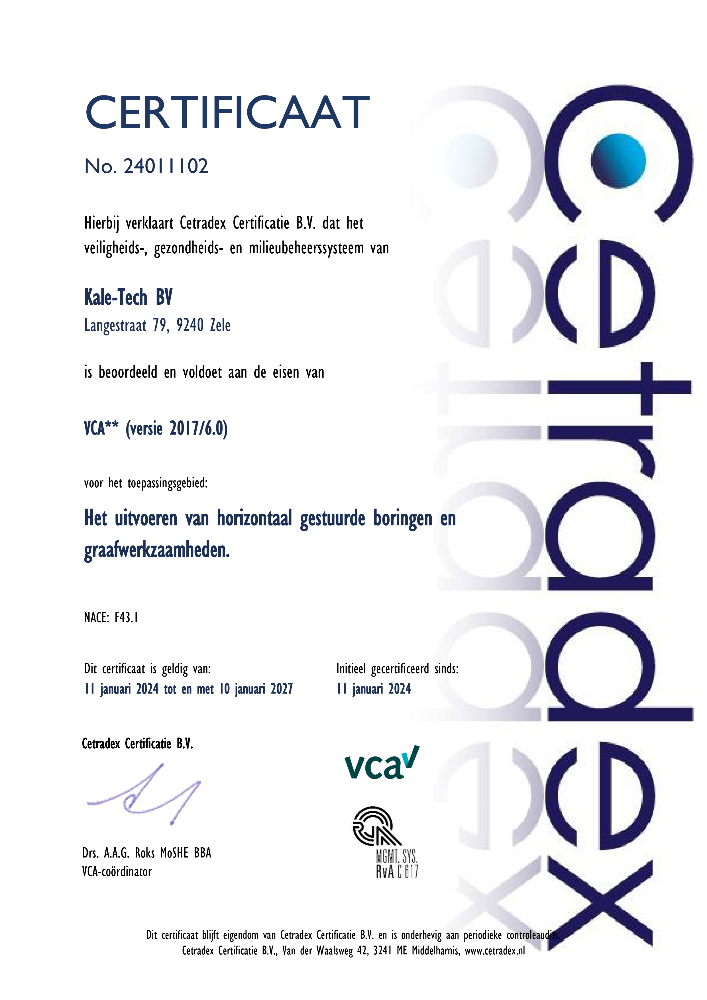

Veilig werken,
elke dag
Veiligheid en kwaliteit gaan bij Kale-Tech hand in hand.
Daarom zijn we VCA**-gecertificeerd: het bewijs dat we voldoen aan strenge normen voor veiligheid, gezondheid en milieu in de sector van horizontaal gestuurde boringen.
Kies je voor Kale-Tech, dan kies je voor een partner die veilig, efficiënt en professioneel werkt.
Hoe we veilig werken
Opgeleide ploeg
Onze medewerkers zijn opgeleid en gekwalificeerd om de VCA-normen elke dag op de werf toe te passen.
Volgens de regels
We werken altijd volgens de geldende wet- en regelgeving, met duidelijke afbakening en signalisatie.
Mens en omgeving
De gezondheid van onze ploeg, de buurt en de omgeving verliezen we nooit uit het oog.
Ook met ons samenwerken?
Neem contact op, dan bekijken we samen wat je project nodig heeft.